Noosfero

“Uma plataforma web livre para redes sociais e de economia solidária”
O Noosfero é
- Software Livre (Afero GPL)
- Escrito em Ruby On Rails 3
- Migrando para o Rails 4
- Expansível (plugins)
- Customizável (temas, blocos, etc)
Site http://noosfero.org
Blog http://softwarelivre.org/noosfero
Principais funcionalidades do Noosfero
- Rede social
- pessoas, comunidades e organizações
- CMS
- pastas, artigos, RSS, imagens e arquivos
- Blog e notificação de comentários
- Compartilhamento de interesses
- Discussões temáticas
- Agenda de eventos
- Catálogo de serviços e produtos
O desenvolvimento ocorre em torno do gitlab
http://gitlab.com/noosfero/noosfero
- Issues
- Milestones
- Merge Requests
A metologia de desenvolvimento das equipes baseia-se em métodos ágeis e TDD
Manutenção e desenvolvimentoDois branches:
|
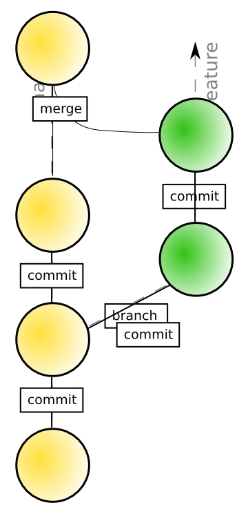 |
A comunicação
⇾ Bate-papo
⇾ Presencialmente
⇾ Videoconferência
Comunicação via bate-papo
Nos seguintes canais na rede IRC Freenode (freenode.net)
- #noosfero « em inglês
- #noosfero-br « em português
Você pode usar um cliente IRC web caso não queira instalar um em seu computador webchat.freenode.net
Comunicação via e-mail
Lista de discussão noosfero-dev « em inglês
http://listas.softwarelivre.org/listinfo/noosfero-dev
Lista de discussão noosfero-br « em português
http://listas.softwarelivre.org/listinfo/noosfero-br
Comunicação presencial
Anualmente ocorre o encontro comunitário no Fisl
fisl.org.br
Mas se você está perto pode fazer uma visita e bater um papo com algum desenvolvedor Noosfero
- Colivre, Salvador-BA
- Serpro, Salvador-BA
- UnB Gama, Brasília
Videoconferência
1º Encontro virtual de desenvolvedores Noosfero
02 de Outubro de 2015 às 15h
softwarelivre.org/noosfero/encontros
este encontro deve ocorrer com alguma frequência, a cada 3 meses por exemplo
Histórico
O Noosfero v0.1.0 nasceu em 2007 entre uma parceiria da Colivre com:
- Fórum Brasileiro de Economia Solidária
- Ynternet.org Fondation (Suiça)
FBES
Cirandas.net
Objetivo: “Fortalecer os empreendimentos e divulgar a Economia Solidária”
Ynternet.org
Zen3.net
Objetivo: “Plataforma para exercício pleno da ‘cidadania digital’ (netizenship)”
Desde então surgiram muitos outros parceiros
E o Noosfero hoje atende
ASL, USP, Serpro, SGPR, Blogoosfero, OCEB, UnB, Qualipso, IPF, Kliceo, UCSal, MPOG, UFBA
* Alguns são também clientes da Colivre
E deste a primeira versão do Noosfero lançada em 2007 foram lançadas 156 versões
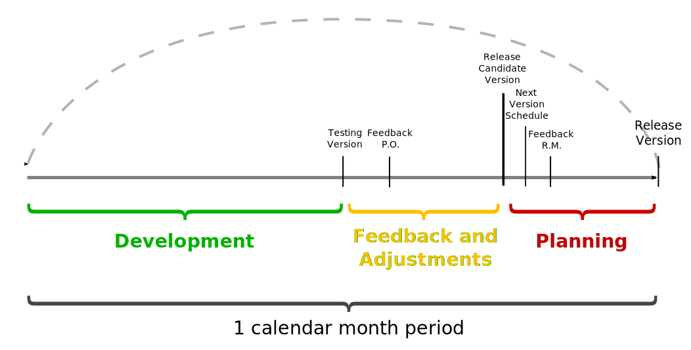
Versões
Versões de funcionalidades novas
1.XX.0
Versões de manutenção
1.XX.(1-9)
Versão atual
1.2.0
blogoosfero.cc
cirandas.net
fga.unb.br
social.stoa.usp.br
softwarelivre.org
www.ucsal.br
participa.br
participa.ma.gov.br
ripe.ufba.br
softwarepublico.gov.br
A comunidade Noosfero cresceu
“Estas instituições se tornam parceiras do projeto Noosfero e hoje são parte da comunidade de usuários e desenvolvedores”
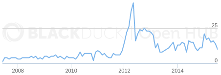
http://www.openhub.net/p/noosfero
O Noosfero é personalizável
Temas
| header.html.erb | elementos do cabeçalho |
| footer.html.erb | elementos do rodapé |
| navigation.html.erb | links do menu superior |
| style.css | né?! |
| theme.yml | configurações do tema |
Temas
Você pode alterar o tema do ambiente (Environment) pelo console:
./script/console ou noosfero-console
e = Environment.default
e.theme = "mytheme"
e.save
http://noosfero.org/Development/CreatingThemes
HACKING.themes.md
O Noosfero é extensível
Plugins
ldap, oauth, carrinho de compras, novos tipos de blocos, novos tipos de conteúdos, …
Os plugins estão todos junto ao código-fonte do noosfero na pasta ‘plugins/’
http://noosfero.org/Development/PluginsArchitecture
Arquitetura do Noosfero
- Environment
- Profile
- Person
- Community
- Enterprise
- Article
- TextileArticle
- UploadedFile
- Folder
- Blog
- Block
- MembersBlok
- LinkListBlock
MultitenancyDocumentação sobre como instalar Noosfero com suporte a multitenancy: INSTALL.multitenancy.md |

|
Criar um ambiente de denvolvimento
git clone https://gitlab.com/noosfero/noosfero.git
cd noosfero
./script/quick-start
Esta forma de instalação é adequada para ambientes de desenvolvimento ou testes
Recomendação utilizar Debian Wheezy
Configuração de domínios
(em ambientes de desenvolvimento)
Edite o /etc/hosts e adicione a seguinte entrada:
127.0.0.1 noosfero.ufba
Configuração de domínios
Abra o console do Noosfero e execute o seguinte código:
$ rails console
env = Environment.default
domain = Domain.new(:name => 'noosfero.ufba', :is_default => true)
env.domains << domain
Configuração de domínios
Reinicie o servidor de desenvolvimento
$ ./script/development
Este script inicia alguns serviços além do servidor Rails local:
- feed-updater
- delayed_job
- whenever
Criar usuário administrador
Abra o console do Noosfero e execute o seguinte código:
env = Environment.default
admin = User.new({
:login => "adminuser",
:email => 'adminuser@localhost.localdomain',
:password => 'admin',
:password_confirmation => 'admin',
:environment => env,
})
admin.save
admin.activate
env.add_admin(admin.person)
Criar usuário administrador
Acesse http://localhost:3000
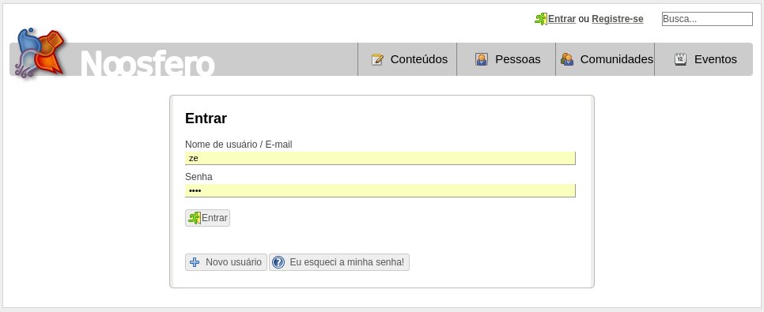
Instalação via pacote Debian
(recomendado para uso em ambientes de produção)
download.noosfero.org/debian
Os pacotes do Noosfero seguem, com um certo “delay”, a versão estável do Debian, hoje está em Debian Wheezy
# apt-get install postgresql
# apt-get install noosfero noosfero-apache
Criação do banco de dados
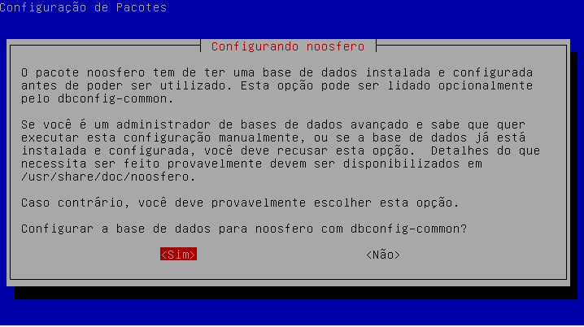
Cria um banco postgresql chamado “noosfero”
Senha do postgresql
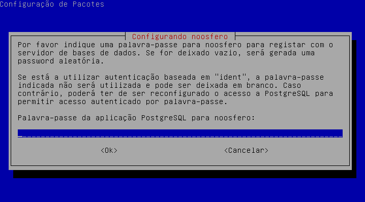
recomenda-se deixar em branco para que o sistema gere uma senha aleatória
Registro e configuração de domínios
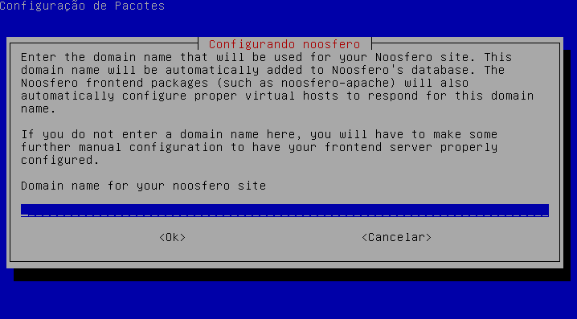
Digite: noosfero.ufba
Configuração para envio de emails
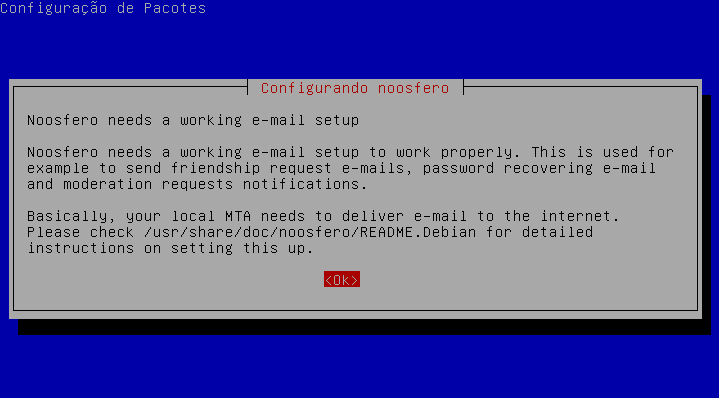
Teste o acesso
Acesse: http://noosfero.ufba/
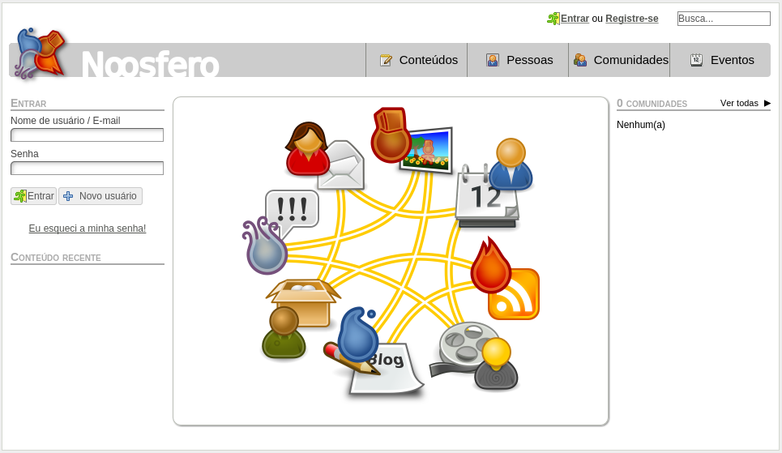
Análise de logs
| Produção | Desenvolvimento |
| production.log | development.log |
| delayed_job.log | development_delayed_job.log |
| production_spammers.log | development_spammers.log |
| cron.log | cron.log |
Capturando ocorrências ao-vivo
tail, grep, …
$ tail -f log/development.log
$ tail -f log/development.log | grep POST
Analisando performance
request-log-analyzer
request-log-analyzer.com
Ferramenta de linha de comando para gerar relatório de performance a partir da análise de logs, suporta vários formatos (Rails, Merb, DelayedJob, Apache, NGINX, …) 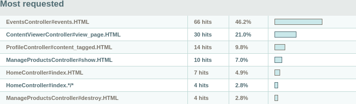
request-log-analyzer
Instalando
$ gem install request-log-analyzer
Caso isto não funcione faça download em http://rubygems.org/gems/request-log-analyzer
$ gem install request-log-analyzer-1.13.4.gem
Executando
$ request-log-analyzer log/production.log
Para gerar o relatório em HTML utilize os parâmetros: --output html --file
production.html
Backup e restore
Adicione host: localhost em /etc/noosfero/database.yml:
production:
adapter: postgresql
database: noosfero
encoding: unicode
username: noosfero
password: rgF2j7vDbVUR
host: localhost
Logue como ‘noosfero’ e execute a task para gerar o backup:
# su - noosfero
$ rake backup
rake backup
noosfero@noosfero-debian-wheezy:~$ rake backup
mkdir -p tmp/backup
pg_dump -h localhost noosfero > tmp/backup/2015-08-19-12:12.sql
Senha:
tar chaf tmp/backup/2015-08-19-12:12.tar.gz tmp/backup/2015-0...
rm -f tmp/backup/2015-08-19-12:12.sql
****************************************************
Backup in tmp/backup/2015-08-19-12:13.tar.gz !
To restore, use:
$ rake restore BACKUP=tmp/backup/2015-08-19-12:13.tar.gz
****************************************************
Isto cria um arquivo com o dump do banco e todos os arquivos do ambiente Noosfero
rake restore
# su - noosfero
$ rake restore BACKUP=tmp/backup/2015-08-19-12:12.tar.gz
WARNING: backups should be restored to an empty database, otherwise
data from the backup may not be loaded properly.
You can remove the existing database and create a new one with:
$ sudo -u postgres dropdb -h localhost noosfero
$ sudo -u postgres createdb -h localhost noosfero --owner noosfero
Are you sure you want to continue (y/N)?
Mas antes: destrua o banco!
# su - postgres
$ dropdb noosfero
$ createdb noosfero --owner noosfero
Limitações
- Só é possível importar 1 ambiente
- Se a sua instancia Noosfero já possui ambientes não será possível restaurar outros
Ideia para superar esta limitação
“Usar multitenancy e evoluir a implementação das tasks backup e restore
para entender isto, assim teríamos um isolamento maior”
Criando backup “na mão”
- Crie um dump do banco de dados
- Copie os arquivos
- public/articles
- public/image_uploads
- public/thumbnails
# su - postgres
$ pg_dump noosfero > noosfero_dump.sql
Scripts de linha de comando
(para ambientes de produção)
noosfero-console
# noosfero-console
noosfero-runner
# noosfero-runner "puts Environment.default.name"
noosfero-plugins
# noosfero-plugins list
Instalando varnish
Varnish Cache é um acelerador de aplicações web, também conhecido como proxy reverso de cache HTTP
www.varnish-cache.org
Siga a documentação em INSTALL.varnish.md nos fontes do Noosfero
Instalando varnish
# apt-get install varnish
# apt-get install libapache2-mod-rpaf
- Configure o Apache para escutar na porta
8080 - Configure o Varnish para escutar na porta
80
Multitenancy
Multitenancy é um princípio em arquitetura de software onde uma única instancia de software rodando num servidor serve várias organizações, chamado tenants (inquilino)
Com esta arquitetura o Noosfero isola os seguintes dados para cada Environment
- Uploaded files
- Database
- Solr index
- ActiveRecord#cache_key
- Feed updater
- Delayed Job Workers
Vamos popular o banco com alguns dados de teste
mas antes desabilite o envio de emails
Adicione a linha abaixo ao arquivo config/environments/production.rb
config.action_mailer.delivery_method = :file
Vamos popular o banco com alguns dados de teste
script/sample-data
# su - noosfero
$ RAILS_ENV=production ./script/sample-data
Creating categories: .........E...F....... done!
Creating regions: ........................ done!
Creating users: EEEEE....EEEEE............ done!
...
Este script cria categorias, usuários, perfils de comunidades, empreendimentos, artigos, textos, blogs, etc… com dados “aleatórios”
Migrar uma instalação Noosfero para Multitenancy
Altere o arquivo /etc/noosfero/database.yml
ufba_production: &DEFAULT
adapter: postgresql
database: noosfero
encoding: unicode
username: noosfero
password: 547fjsJA
schema_search_path: public
domains:
- noosfero.ufba
production:
<<: *DEFAULT
Migrar uma instalação Noosfero para Multitenancy
Criar um ‘ambiente Rails’ baseado em ‘production’ para o novo ‘tenant’ ‘ufba_production’
# cd ~noosfero
# RAILS_ENV=production rake multitenancy:create
Mova os arquivos de usuários e uploads:
# mkdir public/articles/public
# mv public/articles/0000 public/articles/public/
# mkdir public/image_uploads/public
# mv public/image_uploads/0000 public/image_uploads/public/
# mkdir public/thumbnails/public
# mv public/thumbnails/0000 public/thumbnails/public/
Evitando links quebrados
É possível que existam referências para conteúdos estáticos armazenados no sistema de arquivos, então é importante configurar o servidor web para evitar problemas
Adicione as seguintes linhas à configuração do Apache:
RewriteRule ^/articles(.+) /articles/public$1
RewriteRule ^/image_uploads(.+) /image_uploads/public$1
RewriteRule ^/thumbnails(.+) /thumbnails/public$1
Adicionando novos inquilinos (tenants)
Adicione as configurações abaixo ao arquivo /etc/noosfero/database.yml
ripe_production:
adapter: postgresql
database: noosfero
encoding: unicode
username: noosfero
password: 547fjsJA
schema_search_path: ripe
domains:
- ripe.ufba
Crie o schema do banco de dados
# su - postgres
$ psql noosfero -c "CREATE SCHEMA ripe AUTHORIZATION noosfero"
Adicione o domínio ao Apache, edite o arquivo /etc/apache2/sites-enabled/noosfero e adicione o seguinte
ServerAlias ripe.ufba
Prepare o banco de dados
# cd ~noosfero
# RAILS_ENV=production rake multitenancy:create
# RAILS_ENV=ripe_production rake db:schema:load
# RAILS_ENV=production rake db:migrate
Atualize as configurações do pound
Edite o arquivo /etc/pound/pound.cfg
Service
HeadRequire "Host:.*noosfero.ufba.*"
Redirect "https://noosfero.ufba"
End
Service
HeadRequire "Host:.*ripe.ufba.*"
Redirect "https://ripe.ufba"
End
Novo ambiente pronto para ir “ao ar”
Remova os logs do novo ambiente para evitar problemas de permissão e reinicie o Noosfero, Apache e o Pound
rm /usr/share/noosfero/log/ripe_*
service noosfero restart
service apache2 restart
service pound restart
Cadastrando o novo ambiente (Environment) no banco de dados
RAILS_ENV=production NOOSFERO_DOMAIN=ripe.ufba rake db:data:minimal
Recuperando backup em um novo ambiente com multitenancy
Acompanhamento de excessões
Notificar por email quando ocorrer algum erro no Noosfero
gem install exception_notification -v 1.0.20090728
Adicione os emails que serão notificados em /etc/noosfero/noosfero.yml
production:
exception_recipients: [admin@example.com, you@example.com]
Outras opções do noosfero.yml
addthis, gravatar, tamanho máximo dos uploads, tempo para checar ativação dos usuários, …
Veja um exemplo deste arquivo em /usr/share/doc/noosfero/examples/noosfero.yml.dist ou config/noosfero.yml.dist
Chat Noosfero
O Noosfero possui suporte a chat, a infraestrutura do lado servidor é
toda em cima do protocolo XMPP através do servidor ejabberd
xmpp.org
www.ejabberd.im
Instalar chat
A partir do Noosfero 1.2 o chat pode ser instalado via pacote Debian
Mas antes de instalar o pacote é preciso editar o database.yml e remover a entrada host: localhost
bug com o multitenancy!
Instalar chat
apt-get install noosfero-chat
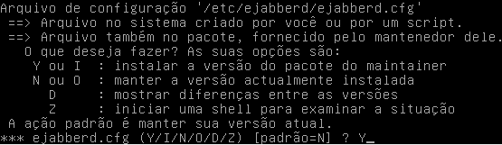
Edite novamente o database.yml e adicione o host: localhost
Administrador -> Funcionalidades -> Bate-papo baseado em XMPP/Jabber
Gerar pacote Debian
Instale as dependencias
apt-get install devscripts debhelper
Informe ao git quem você é e gere o pacote Debian
git config --global user.email "you@example.com"
git config --global user.name "Your Name"
Necessário ter uma chave GNUPG pois o processo assina os pacotes Debian gerados com sua chave
Gerar pacote Debian
rake noosfero:release[stable]
Ao ser questionado sobre a versão informe: 1.2+ufba1
Este processo irá gerar os pacotes: noosfero, noosfero-apache e noosfero-chat
Veja detalhes em RELEASING.md
Obrigado!
joenio@joenio.me
Esta apresentação está disponível em:
http://joenio.me/slides/noosfero
(código-fonte: http://github.com/joenio/joenio.me)

Créditos
Imagens utilizadas nesta apresentação
- http://jindra12.deviantart.com/art/Ocean-211965086
- http://commons.wikimedia.org/wiki/File:Few_people_working_on_repairing_pond.jpg
- http://realsaw.deviantart.com/art/timeline-138456373
- http://ayudawordpress.com/varnish-como-servicio-en-wordpress
- http://sparklestarcat.deviantart.com/art/Monument-keyboard-358167802
Histórico de apresentações
Onde e quando esta apresentação foi realizada
- 17 Ago 2015, STI UFBA - Salvador, treinamento de Noosfero avançado para sysadmins
- 23 Out 2015, Faculdade JK - Brasília, II Seminário de Educação e Novas Tecnologias